Capa d’Honras
Cozinha tradicional portuguesa, feita com o carinho e os sabores da terra mirandesa.
Reservar mesaVer a cozinhaUma casa com nome de tradição
O nome vem da capa de honras, a histórica capa de lã que se veste em Miranda do Douro nas ocasiões mais solenes. Aqui, essa mesma ideia de respeito e hospitalidade serve-se à mesa: um espaço acolhedor, no centro histórico, perto do castelo.
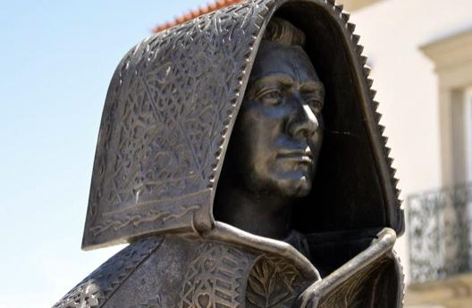
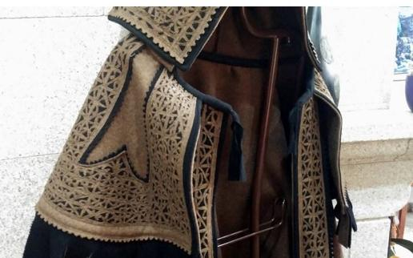
Da nossa cozinha
Pratos de sempre, com destaque para o bacalhau e para a carne mirandesa.
Posta Mirandesa
A famosa carne da raça bovina mirandesa, grelhada no ponto e acompanhada como manda a tradição.
Bacalhau
Um clássico da casa, preparado de várias maneiras, incluindo o bacalhau com natas.
Carnes da terra
Cordeiro assado, costeleta e barriga de porco, com sabor a campo e doses generosas.
Alheira e entradas
Alheira caseira, salpicão, rissóis fritos na hora e sopa para abrir a refeição.
Sobremesas caseiras
Para terminar em doçura, como o bolo de laranja.
A carta pode variar com a época. Pergunte-nos pelas sugestões do dia.
Galeria
Uma amostra do que se serve à mesa e do espaço onde o recebemos.
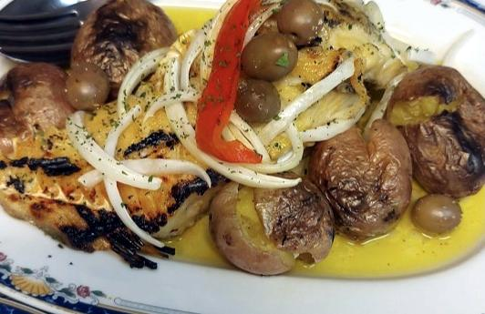
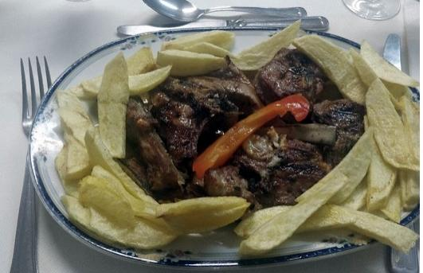
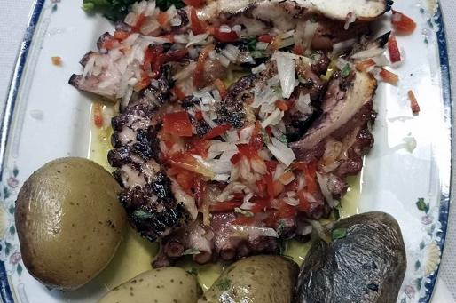
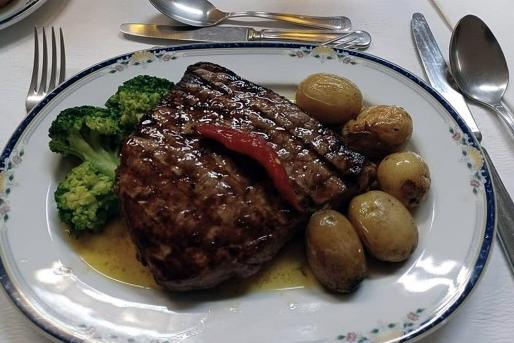
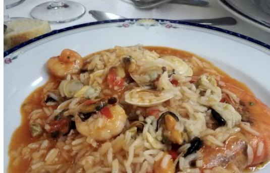
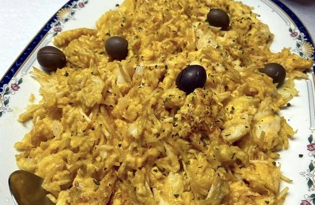
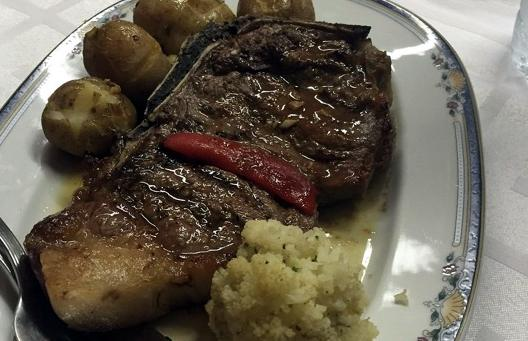
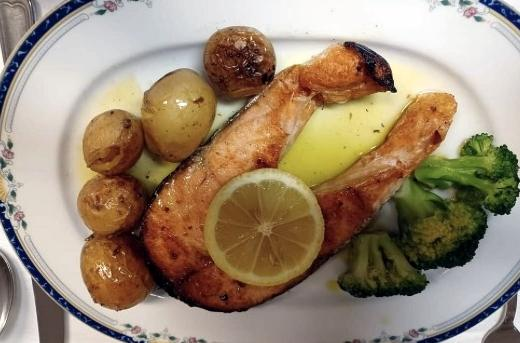
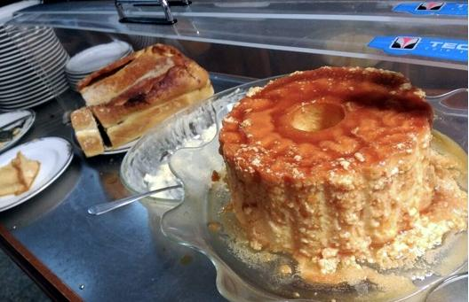
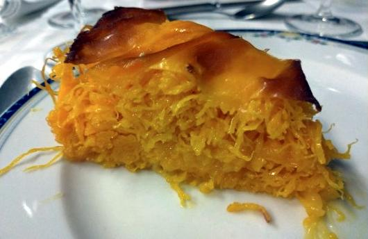
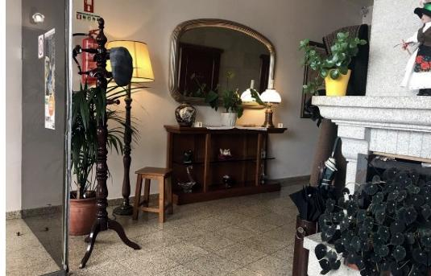
Venha visitar-nos
- Morada
- Travessa do Castelo 1, 5210-234 Miranda do Douro
- Telefone
- +351 934 981 905
- Horário
- Almoço e jantar. Ligue-nos para confirmar o horário e reservar mesa.
- Acessibilidade
- Acessível a cadeiras de rodas e com cadeiras de bebé.
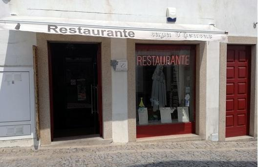